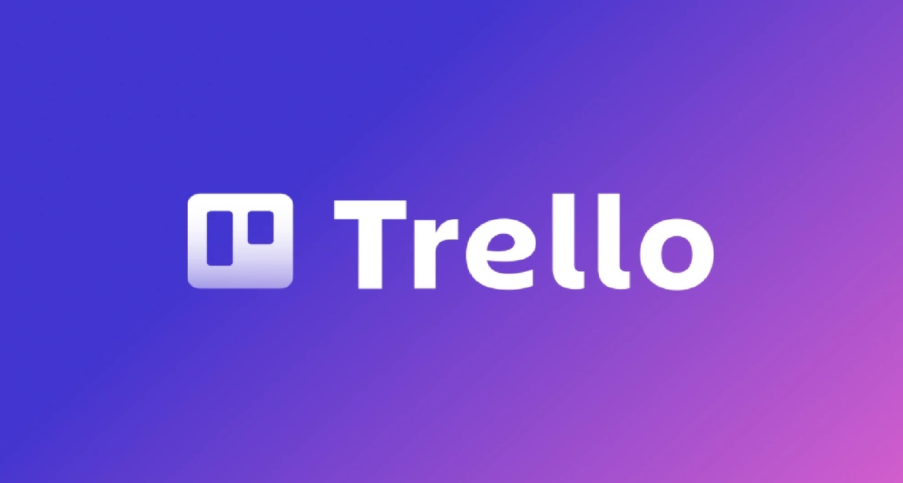

Trello: Organiza tu vida académica y profesional
Si eres de los que se pierden entre entregas y proyectos, el sistema Kanban de Trello es tu salvación. Basado en tableros y tarjetas visuales, te permite ver el flujo de trabajo en tiempo real. Ideal para trabajos en grupo donde nadie sabe qué está haciendo el otro.
Leer reseña completa